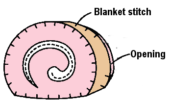
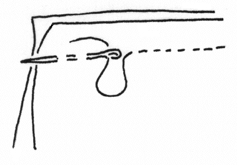

Step 4
With the pink thread, stitch the cake fronts on using blanket stitch, leaving a small opening for stuffing the roll.
Also helpful:
- Threading a needle
- Blanket stitch
- Tying off hand sewing



With the pink thread, stitch the cake fronts on using blanket stitch, leaving a small opening for stuffing the roll.
Also helpful:
A decorative stitch visible on both sides, traditionally used to reinforce the edge of thick materials such as blankets.
A basic hand-sewing stiched, worked by passing the needle in and out of the fabric.
